7 Adding AI to Your Hardware
An Introduction to Smart Microscopy
Victoria Augoustides ![]()
Giorgio Tortarolo
Alara Kiris
Suliana Manley
Wesley Legant
7.1 Imaging the Events of Biological Systems
Microscopy experiments answer biological questions by measuring structures and dynamic processes in living systems. To collect useful data, the microscopist must decide where, when, how fast, and how long to image based on features and processes in the specimen. Traditionally, the microscopist identifies regions of interest (ROIs), monitors sample behavior, and adjusts acquisition settings using domain expertise and visual inspection. While effective for small-scale experiments, this manual workflow limits throughput, introduces operator-dependent variability, and can miss rare or rapidly occurring biological phenomena.
These challenges motivate the development of smart microscopy systems that can automatically recognize biologically relevant features and respond in real time. Automated decision-making can increase acquisition speed, improve reproducibility, and enable experiments that would be impractical for a human operator to perform manually. Recent advances in machine learning have substantially expanded the range of biological signatures that can be recognized during image acquisition, bringing microscopy closer to a paradigm in which imaging systems actively direct an experiment’s trajectory rather than simply record data.
In this chapter, we introduce the concepts, technologies, and challenges involved in developing AI to augment microscopy experiments in real-time. Our goals are to:
- Define biological objects and events as targets for image acquisition and analysis
- Describe the evolution of automated object detection from classical image processing to modern machine learning
- Explain the unique data, labeling, and modeling considerations associated with event detection and real-time performance
- Evaluate the opportunities, limitations, and reliability of AI-driven microscopy workflows
7.2 Framing the Event Detection Landscape
For an imaging system to recognize and respond to biological activity, it must first distinguish between objects and events:
- An object is an identifiable feature located within a two-dimensional image or three-dimensional volume, such as a cell, organelle, or protein assembly. Objects are primarily defined by spatial characteristics including size, shape, intensity, and location.
- An event, by contrast, represents a change or transition that unfolds over time with distinct start and end points. Examples include cell division, mitochondrial fission, receptor clustering, or transient calcium signaling.
Whereas object detection relies primarily on spatial information, event detection requires both spatial and temporal information because the defining characteristic of an event is its evolution over time (Figure 7.1). This distinction has important consequences for image acquisition. To detect an object, the microscope must resolve the object’s relevant spatial features. To detect an event, the microscope must additionally sample the event at sufficient temporal resolution and for sufficient duration to capture its dynamics.
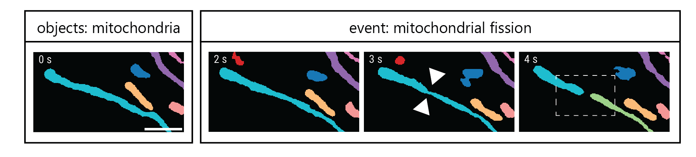
The spatial scales relevant to event detection span many orders of magnitude, ranging from millimeter-scale tissue remodeling, through tens-of-micrometer whole-cell movements, down to nanometer-scale reorganization of protein complexes. Temporal scales are similarly diverse, extending from days for embryonic development, to hours for processes such as cell division and differentiation, and down to milliseconds for rapid phenomena such as calcium transients, ion-channel activity, and single-molecule receptor binding. Importantly, many biological events encompass multiple spatial and temporal scales. For example, molecular-scale signaling events may occur rapidly and subsequently give rise to slower changes in cell morphology (Figure 7.2). Such complexity underscores the advantages of tailoring image acquisition parameters to the biological process under investigation, a central objective of smart microscopy.
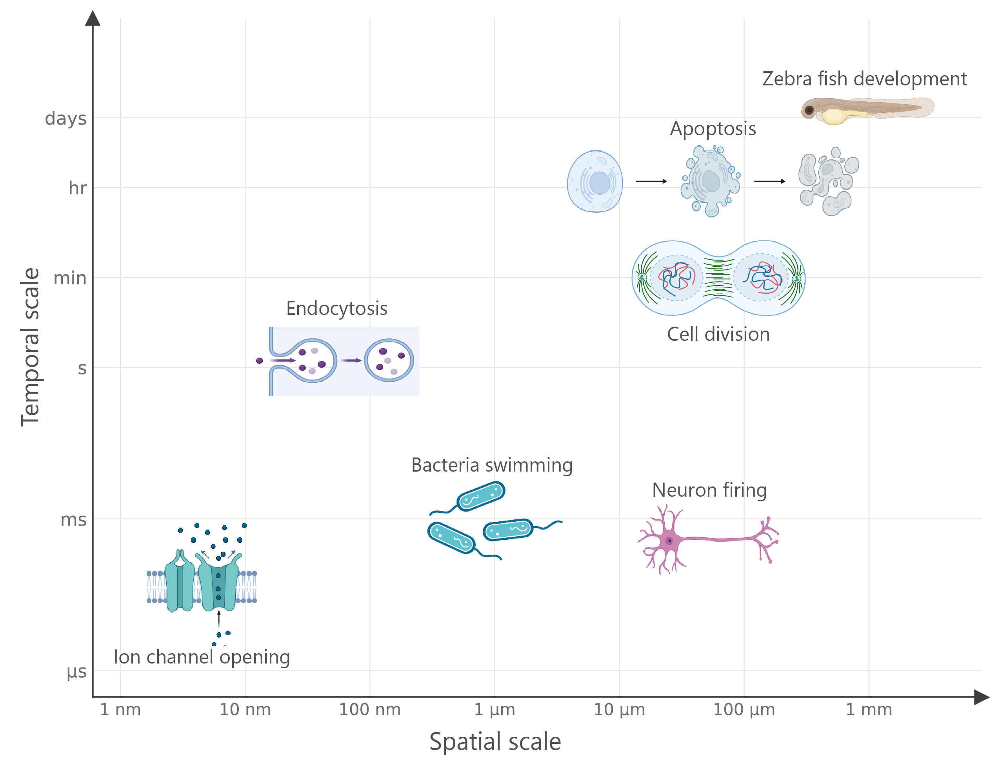
Once the relevant spatiotemporal scales of an event have been identified, an appropriate microscopy modality can be selected. Different imaging methods provide distinct trade-offs between spatial resolution, temporal resolution, imaging depth, and phototoxicity. Widefield, spinning-disk confocal, and light-sheet microscopy generally offer high temporal resolution suitable for capturing fast dynamics, while providing varying levels of volumetric imaging capability and moderate spatial resolution. In contrast, super-resolution techniques such as stimulated emission depletion (STED) microscopy achieve exceptional spatial detail, often at the expense of acquisition speed and increased phototoxicity2. Label-free imaging approaches, although not discussed in detail here, provide complementary contrast based on intrinsic sample properties while minimizing photobleaching and phototoxicity3.
Regardless of the imaging modality used, biological events must produce detectable and consistent changes within the acquired data. Some events manifest as morphological transformations, including cell migration, membrane remodeling, organelle reorganization, or changes in protein-complex architecture. Other events are more readily observed using fluorescent biosensors that report biochemical states such as enzyme activity, ion concentrations, metabolite levels, or membrane potential. These processes can be measured through image-derived signals including changes in fluorescence intensity or fluorescence lifetime. In each case, the measured signal serves as a proxy that provides an indirect but interpretable readout of the underlying biological event.
By selecting imaging strategies that align with the spatial and temporal scales of interest, researchers can ensure that the essential features of biological objects and events are faithfully represented in the acquired data. The next challenge is to determine when and where specific events occur. In the following sections, we discuss how this challenge is addressed through computational approaches to object and event detection.
7.3 Foundations of Automated Object Detection in Smart Microscopy
Before modern deep-learning methods, object detection in microscopy was typically performed using a combination of image-processing and machine-learning operations. Although the specific algorithms varied, most approaches followed a common workflow: first, objects were isolated from the background4, second, quantitative features were extracted from each object, and third, these features were used to classify objects into biologically meaningful categories5,6.
The goal of an object detection algorithm is to identify objects within an image and describe their spatial location and extent. Figure 7.3 A illustrates representative biological objects that vary widely in their spatial distribution, size, and morphology, including nuclei, cytoplasmic RNA and nucleoli, mitochondria, and other cellular structures. Object detection pipelines generally characterize each detected object by reporting:
- the centroid coordinates of each object,
- the coordinates of a bounding region, and/or
- a class label describing the object’s identity7.
The first step in many classical detection pipelines is image segmentation, in which pixels are separated into objects and background (Figure 7.3 B). A common approach is thresholding, in which pixels above a certain intensity are assigned to the foreground and all others to the background, producing a binary mask. Intensity alone is rarely sufficient to cleanly separate objects, so additional morphological operations (e.g., erosion, dilation, or watershed) can then be applied to refine object boundaries. These operations, among others, can help distinguish neighboring objects that may otherwise appear to be merged. For an extended discussion of object segmentation, please see Chapter 9.
Once objects have been segmented, quantitative measurements can be extracted from the individual objects in the masked raw image or from the mask itself, often using tools such as CellProfiler5. Common features include intensity, area, perimeter, shape descriptors, texture measurements, and spatial relationships to surrounding structures8. Together, these measurements are aggregated into a feature vector that provides a numerical description of each object (Figure 7.3 B).
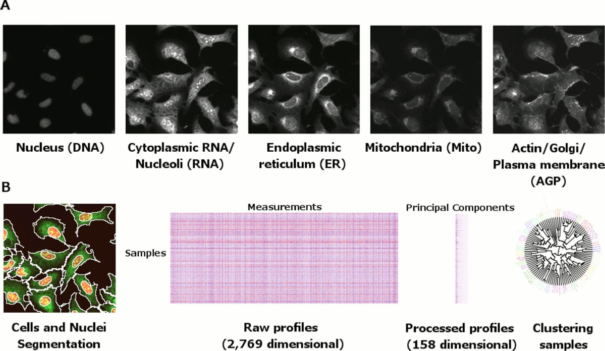
The final stage is classification, in which feature vectors are assigned to biologically meaningful categories10–12. In simple applications, classification can be performed using manually defined rules. For example, objects exceeding a particular size threshold might be classified differently from smaller objects. However, manually setting cutoffs for each feature becomes increasingly difficult as the number of measured features grows. To address this challenge, machine-learning methods were adopted to learn classification rules directly from data. Algorithms, such as perceptrons13, support vector machines (SVMs)14, and other classifiers15, learn decision boundaries that separate groups of feature vectors within a multidimensional feature space. For example, a classifier may learn to distinguish normal cells from cancer cells based on combinations of morphological and intensity-based measurements in feature vectors (Figure 7.4). Compared with manually-specified rules, these learned decision boundaries can more effectively exploit high-dimensional feature sets and often generalize better to new data16.
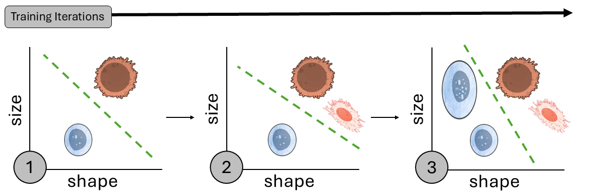
The incorporation of machine learning into classical object detection pipelines marked an important transition from automated image processing to automated decision-making. The initial use for machine-learning classifiers was primarily to categorize objects during post-acquisition analysis17–19. As computational capabilities advanced, these same classification approaches began to inform microscope control in real time, enabling imaging systems to react to the objects they detected20–22.
CellProfiler Analyst (Case Study 7.1) exemplifies the first stage of this progression. The platform automated segmentation, feature extraction, and classification, allowing large populations of cells to be quantitatively characterized using high-dimensional cytoprofiles. Machine learning improved the accuracy and scalability of object classification, but the resulting decisions remained confined to downstream data analysis after images had been acquired.
MicroPilot (Case Study 7.2) illustrates the next stage, in which object detection was integrated directly into the acquisition process23. Rather than simply classifying objects after imaging, MicroPilot used detection results to guide data acquisition in real time. In a benchmark study, the system autonomously identified and imaged 232 mitotic cells during four nights of unattended operation. Achieving a comparable dataset through manual screening would have required more than a month of effort by an experienced microscopist. Case Study 7.2 demonstrated how automated object detection could move beyond analysis to actively control image acquisition, a key step toward modern smart microscopy.
A common feature of both case studies, and of most object detection approaches of the time, was that machine-learning algorithms operated and learned from feature vectors rather than image pixels. Consequently, their performance depended on the quality of the upstream segmentation and feature-extraction steps, processes that may discard biologically relevant information present in the native image structure. Furthermore, object localization and classification were treated as separate stages, reinforcing a distinction between identifying where an object is and determining what it is.
Advances in model architectures and computational power eventually enabled end-to-end learning, in which object localization and classification could be optimized jointly24. By learning directly from image data, these approaches allowed spatial and semantic information to be captured simultaneously. Combined with the emergence of larger imaging datasets, these developments greatly expanded the capabilities of object detection and laid the foundation for modern deep-learning approaches, discussed in the next section.
Semi-Automation using ML for Post-Acquisition “Cytoprofiling”
CellProfiler5 is a post-acquisition software for automated image segmentation, feature extraction, and downstream analysis of biological images. While there are many different versions of CellProfiler, this study presented an example of a semi-automated machine learning approach to object detection using CellProfiler Analyst17,19,25. Feature vectors, here called cytoprofiles, were automatically extracted from raw image data during the detection step (Figure 7.5 A). Next, a human identified phenotypes of interest from the data that the software used to create classification rules for scoring cytoprofiles. To automate classification, the user trained a supervised machine learning model (specifically a boosting algorithm applied to an ensemble of shallow decision trees26) for each imaging experiment (Figure 7.5 B). Once trained, the model could be applied to feature vectors from new experiments to score wells in high throughput experiments (Figure 7.5 C). Using this approach, the authors processed 40,000 fluorescence images capturing 8.3 million cells from which they detected and classified 14 distinct phenotypes, such as diverse distributions of actin and cell cycle states (Figure 7.5 D).
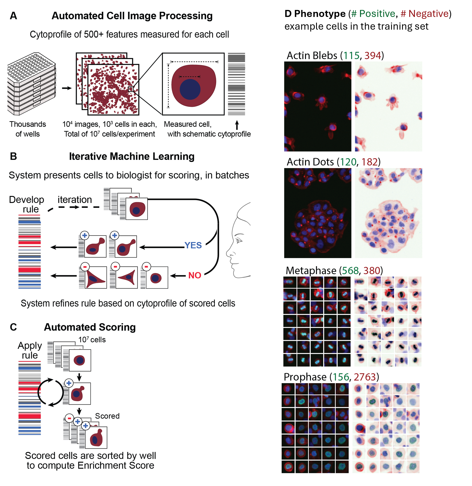
Integration of Object Detection with Automated Assays
Rather than analyzing data after imaging was complete, MicroPilot used ML models to classify structures from low-resolution preview scans in real time (Figure 7.6 A). First, the low-resolution preview scan was segmented, and a feature vector was generated (Figure 7.6 B). Once a structure of interest was classified by the ML model, the software automatically triggered a predefined imaging assay (Figure 7.6 B). This could range from acquiring high-resolution time-lapse videos to initiating complex laser-based perturbations, such as photobleaching or protein ablation, all without user intervention.
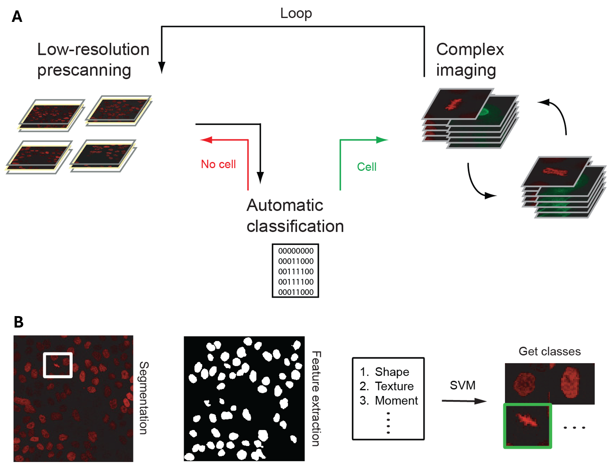
7.4 Deep Learning for Object and Event Detection
The transition toward end-to-end learning began with networks capable of learning features directly from images, starting with convolutional neural networks (CNNs) and more recently featuring transformer architectures. Although CNNs were originally developed in the 1980s, their widespread adoption was catalyzed by the ImageNet Large Scale Visual Recognition Challenge in 2010, which introduced a large, standardized dataset and robust evaluation metrics27,28.
Early datasets like ImageNet typically included a single centered object per image, and over time, they evolved to include multiple objects per image. Therefore, models such as AlexNet29 and ResNet30 were first only applied to single-object classification and localization tasks (Figure 7.7 A). Later, these frameworks were extended to classify and localize many objects to perform object detection.
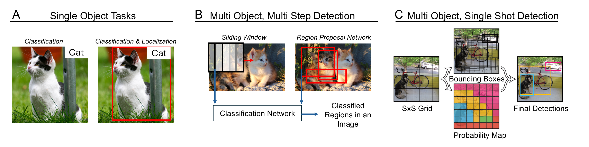
7.4.1 Evolution of Object Detection
Multi-object, multi-step detection comprises three key steps: candidate region proposal, classification, and refining classified regions. The simplest way to profile an image for candidates is to iteratively scan the image with a sliding window32–35, and then evaluate each window with a classifier (Figure 7.7 B). A more efficient approach came from the R-CNN series of models (2014-2017) that instead proposed regions in an image for classification (Figure 7.7 B)24,36,37.
Sliding window and region-based models were succeeded by single-shot detection approaches, where detection and classification occur together in a single forward pass (Figure 7.7 C). Some of the most widely used algorithms are the You Only Look Once (YOLO) models, which treat object localization and classification as an optimization problem across a fixed grid31,38–41. Although YOLO performs classification and localization jointly, the rate limiting steps of YOLO models occur in post-processing the proposed bounding boxes42.
These CNN-based models are well-suited for detecting small, well-separated features, such as puncta, nuclei, or other localized signals in biological images. However, CNNs can struggle to capture broader spatial relationships such as multicellular phenotypes within a tissue. Transformer-based models43, including natural language processing models, process entire inputs at once via self-attention. For images, the Vision Transformer (ViT)44, can process an entire image at once unlike CNNs. Similarly to extending early classification networks, detection models like DEtection TRansformer (DETR)45 and RT-DETR46 adapted the transformer architecture for object detection allowing these models to infer complex spatial relationships without relying on region-proposals, grids, or post-processing steps.
Due to the complexity of transformers, we direct the interested reader to the following video resources:
7.4.2 Extending Object Detection to Events
Most object detection models, whether region-based, one-shot, or transformer-based, are designed to operate on individual two-dimensional (2D) images, treating each frame independently. In contrast, events unfold over time and require models that can reason across input sequences of images, such as a 2D image + time (2D+t) stack, rather than individual frames. Broadly, there are several strategies for detecting events from sequential image formats:
- Decoupled Object Detection and Temporal Linking: Apply an ML object detector to each frame of a time stack independently, then use post-processing or a feedback loop to link detections over time into events47.
- Sequential Detection and Temporal ML Model: Detect objects in each frame and incorporate a sequence model (such as a recurrent neural network or long short-term memory ) to capture temporal dependencies and classify dynamic transitions48,49.
- Simultaneous Spatiotemporal Detection: Feed multiple frames of a 2D+t series into the model simultaneously allowing the network to directly output temporally aware predictions such as 2D+t bounding boxes or event labels50.
It can be challenging to adapt ML approaches that are optimized around natural image data which is fundamentally different from microscopy images51. Biological signals, especially fluorescent signals, are often very sparse against a homogeneous background. Additionally, biological processes are often rare, asynchronous, and non-repetitive, unlike typical videos such as cars moving through traffic. In the next section, we delineate considerations for implementing event detection from other ML-based image algorithms in microscopy.
7.5 Building Object and Event Detection Models
7.5.1 Ground Truth and Labeling
The performance of a machine-learning model depends fundamentally on the quality of the examples used during training. Before a model can learn to detect biological objects or events, the experimental objective must be translated into a set of labeled examples, commonly referred to as ground truth. These annotations define the outputs that the model should predict from the input imaging data, such as the location of an object, its identity, the occurrence of an event, or the timing of a biological transition. For more information on designing model outputs, see Chapter 2 and Chapter 4.
In object detection tasks, labels typically describe the spatial position and identity of structures of interest. For example, annotations may indicate the location of a centrosome, or a cell or organelle boundary. Event detection introduces an additional temporal dimension: annotations must specify when an event begins and ends in addition to identifying what and where the object is. For example, labeling mitochondrial fission requires determining the precise frame at which a single mitochondrion divides into two daughter structures (Figure 7.1)20,49.
Creating ground-truth annotations is often the most time-consuming stage of model development. High-quality datasets may require hundreds or thousands of manually annotated examples, and it’s important that within that volume, there is sufficient phenotypic diversity. For object detection, the annotator needs to capture diverse object appearances and experimental conditions. In contrast, event detection is often limited by the scarcity of events themselves and so the challenge is frequently obtaining sufficient examples of rare events. Biological imaging further complicates creating labeled data because annotations frequently require unbiased expert interpretation. Annotators must distinguish signal from noise, recognize subtle morphological features, and apply consistent criteria across diverse experimental conditions.
Furthermore, biological ground truth is rarely absolute and variability in the ground truth is multifaceted. Object boundaries may be diffuse, and event definitions may vary between experts. Differences in imaging conditions, sample preparation, fluorophore expression, and biological variability can further reduce annotation consistency. As a result, training datasets often contain a degree of uncertainty that ultimately influences both model performance and evaluation.
7.5.2 Unique Challenges of Event Detection
Many of these general challenges are amplified in event detection. Because events unfold over time, annotators must identify not only whether an event occurred, but also its precise temporal boundaries. This requirement introduces ambiguity when biological transitions are gradual or poorly defined. For example, in mitochondrial fission, multiple experts may disagree on the exact timestep when constriction becomes visible or when membrane scission occurs. Temporal sampling also plays a critical role; if imaging is performed too slowly, key transitions may be missed entirely.
Event detection datasets can exhibit severe class imbalance because biologically relevant events may occupy only a small fraction of the recorded frames. In addition, event annotations frequently depend on information distributed across multiple imaging channels or modalities, requiring annotators to interpret spatial, temporal, and molecular context simultaneously. These challenges make event labeling substantially more demanding than object labeling and often motivate the use of interactive annotation tools5,6,52,53, weak supervision54, or human-in-the-loop workflows55 to improve efficiency and consistency.
7.5.3 Training Models
Once a ground-truth dataset has been established, the next step is to train a model that can accurately predict object locations, identities, or event occurrences (see also Chapter 4 and Chapter 9). Training proceeds as an iterative loop: the model makes a prediction on the image, compares that prediction to the corresponding ground truth annotation and adjusts its internal parameters to minimize the discrepancy between them. These updates are performed through backpropagation56, an algorithm that calculates how much each individual parameter of the model contributes to the prediction error and updates the value(s) accordingly. Model optimization is guided by one or more loss functions, which quantify prediction errors in tasks such as object localization, classification, or object presence (Table 7.1).
To evaluate how well the model generalizes beyond its training data, the ground truth dataset pool is typically divided into separate training, validation, and test sets. The training set is used to optimize the model parameters, while the validation set is used periodically after each pass through the training dataset to assess performance on unseen data. Validation results can help guide decisions such as when to stop training or how to adjust model settings between training runs. Because these decisions are influenced by the validation dataset’s performance, a third, independent test set is reserved for a final evaluation. Model performance is then evaluated using metrics such as precision and recall that measure how well the predictions match ground-truth labels on the test data16.
| Type | Description | Examples |
|---|---|---|
| Localization Losses | Measure how close the predicted bounding box is to the ground truth box | |
| Classification Losses | Classify each detected object into the correct class |
|
| Objectness Losses | Predict whether an object exists in a box |
|
Model development typically proceeds in two phases: exploration and optimization. During the exploration phase, the goal is to determine whether the model can learn to solve the biological problem using the available data. Researchers often begin with a small representative dataset and a well-established architecture, such as U-Net60, Mask R-CNN61, or YOLO31. Short training runs on limited datasets can reveal whether the model converges, produces biologically meaningful predictions, or exhibits obvious signs of overfitting, where the model fits the training data but is unable to generalize to an unseen dataset. These early experiments help identify potential obstacles before substantial effort is invested in optimization.
7.5.4 Refining and Optimizing Models
Once feasibility has been established, attention shifts toward improving model performance and robustness. In many cases, the most effective strategy is to expand and improve the annotated dataset, as model performance is fundamentally constrained by the quality and diversity of the training examples. Additional annotations, refined labels, and data collected under different experimental conditions can all improve generalization. When annotated data are scarce, simulated datasets, data augmentation, or pre-trained models may also be used to bootstrap learning and reduce annotation requirements.
As model development progresses, increasingly sophisticated architectures may be introduced. Three-dimensional convolutional networks can better exploit volumetric image data, while recurrent or transformer-based architectures can incorporate temporal information required for event detection. These approaches enable models to capture complex spatial and temporal relationships that are difficult to represent using classical object detection pipelines.
Model optimization is often constrained by computational resources. Training deep-learning models on high-resolution, volumetric, or time-lapse microscopy datasets can require hours or days of computation, limiting the speed at which new hypotheses can be tested. Consequently, model development is typically an iterative process in which improvements to data quality, model architecture, and training strategy are evaluated over multiple training cycles. As datasets and models increase in scale, researchers may transition from single-workstation training to high-performance computing or cloud-based resources capable of supporting large-scale experiments.
Ultimately, successful model development depends on balancing biological relevance, annotation quality, model complexity, and computational cost. These considerations become particularly important for event detection, where temporal dynamics, class imbalance, and annotation uncertainty introduce additional challenges beyond those encountered in conventional object detection tasks.
7.6 Real-Time Event Detection in Smart Microscopy
In smart microscopy workflows, event detection can be performed either after image acquisition or during image acquisition. These two approaches, often referred to as a-posteriori and real-time analysis respectively, differ not only in when inference occurs but also in how detection influences the experiment itself.
In a-posteriori analysis, events are identified after the complete dataset has been acquired and stored. This approach allows computationally intensive algorithms to be applied without constraints imposed by the instrument’s acquisition speed and is well suited for retrospective analysis, hypothesis generation, and machine learning model development. However, because detection occurs after the experiment is complete, the results cannot influence image acquisition or experimental conditions.
Real-time analysis, in contrast, processes image data as it is acquired. Rather than serving solely as a downstream analysis tool, event detection becomes part of the imaging workflow itself. This approach is particularly valuable when phototoxicity, storage requirements, or instrument throughput limit the feasibility of continuous high-resolution imaging. Real-time inference has strict time constraints and therefore requires efficient algorithms capable of producing reliable predictions from incomplete and continuously evolving datasets.
The principal advantage of real-time event detection is that it enables adaptive microscopy. By identifying biologically relevant events as they occur, imaging parameters can be adjusted dynamically to focus acquisition effort on the most informative regions, objects, or time periods. This strategy reduces unnecessary sample exposure, minimizes photobleaching and photodamage, and decreases the collection of uninformative data. As a result, experiments can often be performed for longer durations while generating smaller, more information-rich datasets.
Hybrid event-driven acquisition (Case Study 7.3) illustrates the benefits of adaptive microscopy for capturing rare and transient events while minimizing unnecessary fluorescence exposure49. This framework monitored samples using a low-phototoxicity imaging modality and selectively triggered fluorescence imaging only when an event was detected, substantially increasing the number of cells that survived long-term imaging compared with continuous fluorescence acquisition.
Real-time detection also enables closed-loop experimentation. Detected events can trigger downstream actions such as object tracking, high-resolution imaging, experimental perturbations, or automated classification. More broadly, the microscope can use incoming observations to guide future acquisition decisions, transforming image acquisition from a passive recording process into an active, information-driven measurement strategy. This capability is central to the concept of smart microscopy.
Real-time event detection remains challenging because models must balance detection accuracy against computational latency, often while operating under limited hardware resources and in the presence of noisy biological data. Strategies that perform well for one imaging modality or biological system may not generalize readily to others, making robust deployment difficult. Furthermore, uncertainty estimates are rarely incorporated into acquisition decisions, despite their potential value for reducing false positives and missed events. Addressing these challenges will require continued advances in machine learning, microscope control software, and hardware–software integration.
Automated Early Generalizing Protein Aggregation ONset (Case Study 7.4) addresses two important barriers to broader adoption of real-time smart microscopy: computational efficiency and generalizability. The authors showed that deep learning models could maintain high event detection accuracy using substantially fewer temporal and spatial inputs, making real-time inference feasible on more modest computational hardware. They also demonstrated that the framework generalized across different microscope platforms and imaging modalities without transfer learning, illustrating how event-driven microscopy can become more accessible beyond highly specialized experimental systems.
Together, these developments and challenges illustrate the evolution of event detection from a retrospective analytical tool to a mechanism for real-time experimental control. By enabling microscopes to respond autonomously to biological processes as they unfold, event-driven microscopy represents a major step toward intelligent and adaptive imaging systems.
Smart hybrid microscopy for cell-friendly detection of rare events
Hybrid-EDA49 is a real-time event detection and acquisition tool that addresses a fundamental trade-off in fluorescence microscopy: obtaining sufficient signal while minimizing photodamage caused by prolonged accumulation. This framework separates surveillance from event capture by monitoring the sample continuously under phase-contrast, a label-free imaging modality with minimal phototoxicity. When a neural network detects an event from subtle structural cues in the phase-contrast images, fluorescence imaging is triggered (Figure 7.8 A). This approach dramatically reduces phototoxic burden relative to continuous fluorescence surveillance (Figure 7.8 B).
The authors demonstrate this strategy by detecting mitochondrial division and organelle contacts. Mitochondrial division presents a detection challenge because phase contrast is a label-free modality that captures the whole cellular landscape alongside mitochondria, so the subtle structural cues preceding a fission event can easily be lost among unrelated features. To address this, the authors equipped a U-Net with temporal memory across frames, allowing it to track the evolution of a candidate site rather than evaluating each frame in isolation. Hybrid-EDA captured fast, fragile physiological signals that continuous fluorescence imaging would struggle to resolve without accelerating photodamage. As one example, membrane potential dynamics were visualized at a site of mitochondrial constriction using the potentiometric dye TMRE (Figure 7.9).
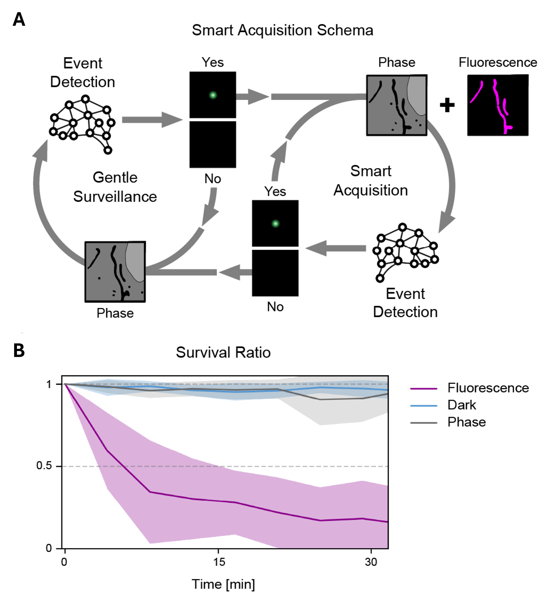
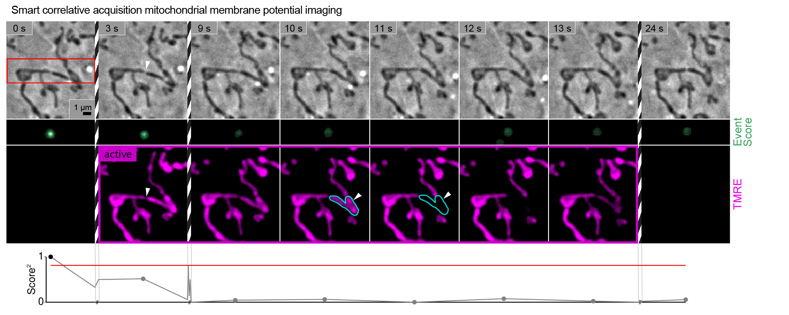
Performing longitudinal protein aggregation detection with AEGON
The AEGON framework62 uses fast fluorescence imaging to identify candidate biological events for a slower and more experimentally demanding Brillouin microscopy assay, a scattering-based technique for measuring the mechanical properties of biological specimens63. The authors demonstrate the framework by identifying the onset of Httex1 protein aggregation in a well-characterized cellular model of Huntington’s disease. Early detection of these events is a challenge for conventional Brillouin microscopy due to its limited throughput. First, the microscope rapidly acquires fluorescence images across a predefined grid of stage positions (Figure 7.10 A), and a deep learning model classifies each image as either an aggregation event or a non-event (Figure 7.10 B). Locations predicted to contain an event are then revisited using optimized Brillouin acquisition settings for longitudinal monitoring (Figure 7.10 C).
A major contribution of this work was demonstrating that accurate real-time event detection could be achieved with substantially less input data, reducing the computational demands of closed-loop microscopy. First, the authors trained models on 4D image stacks and systematically reduced the dimensionality of input data by testing fewer timepoints (Figure 7.11 A). Next, they reduced the number of z-planes input to the ViViT model (Figure 7.11 B). With only a single time point and single z plane, it maintained 86% accuracy as compared to the 91% accuracy it achieved when provided with a single time point and eight z-planes. These results show that high-performance event detection can be maintained under a lower computational budget. The optimized model was then used for real-time event detection of fluorescently tagged Httex1 aggregation (Figure 7.11 C). This adaptive strategy enabled longitudinal monitoring of Httex1 aggregation using brightfield and Brillouin microscopy triggered after the initial detection event (Figure 7.11 D).
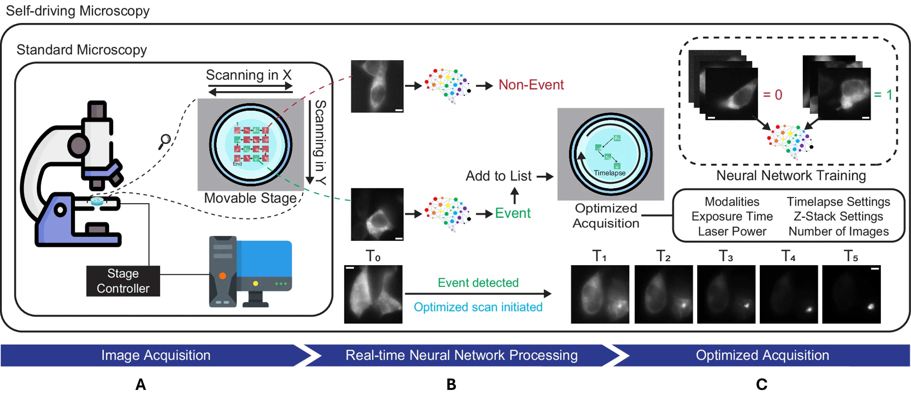
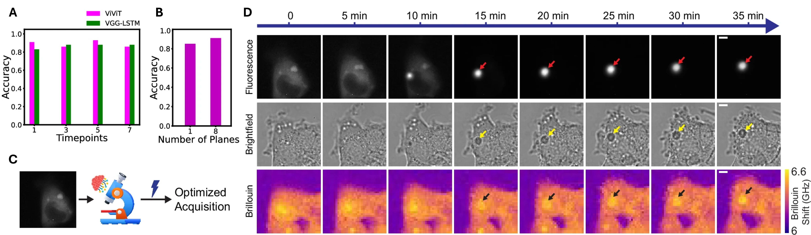
7.7 Challenges and Future Directions in Smart Microscopy
Despite its promise, smart microscopy remains subject to important limitations. The performance of object and event detection models depends strongly on the quality and representativeness of their training data. Models may fail when presented with unfamiliar biological conditions, imaging modalities, or rare phenotypes, and biases in annotated datasets can influence both detection outcomes and subsequent acquisition decisions. Furthermore, adaptive imaging strategies can alter experimental conditions themselves, for example, by exposing different samples to different cumulative light doses, requiring careful experimental controls and validation.
Practical challenges also remain. Event detection often requires large, expertly annotated datasets. Integrating machine-learning models with microscope hardware and control software introduces additional complexity, while increasingly capable microscopes generate data volumes that can be difficult to store, process, and interpret.
At the same time, the opportunities afforded by smart microscopy are substantial. By coupling biological event recognition directly to image acquisition, microscopes can focus on the most informative regions, objects, and time periods while reducing data collection. Advanced instruments already combine multiple imaging modalities, adaptive acquisition strategies, or increasingly generalizable machine-learning models to detect a broader range of biological phenomena1,20,47,49,62,64. More broadly, smart microscopy represents a shift from passive image collection toward active, information-driven experimentation, in which microscopes not only record biological processes but also respond to them in real time.